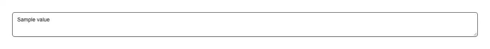

The comment box where typing `@` opens a list of people and picking one types their handle in — the completion that lives inside the prose, anchored under the caret rather than under the field. Reach for it wherever text is addressed to somebody: a code-review or pull-request comment, an issue or ticket description, a chat, DM or channel composer, a task assignment note, a document or design comment thread, a support reply, a release note that credits people, and an AI prompt box where `@` should pull in a file, a table or a teammate. The trigger is a prop, so the same field does `#` for issues, milestones or channels, `/` for commands and `:` for emoji. Common asks it answers: "mention input react", "@ mention textarea", "react mentions component", "autocomplete inside a textarea", "tag someone in a comment box", "@mention dropdown react", "slack style mention input", "github comment @ autocomplete", "shadcn mention input", "shadcn textarea autocomplete", "react-mentions alternative", "tribute.js alternative", "textarea caret position javascript", "get caret coordinates in textarea", "position dropdown at cursor react", "how to know where the cursor is in a textarea", "mirror div caret", "insert text at cursor react", "insertText execCommand react", "keep undo history when inserting text", "cmd+z broken after setState textarea", "mention autocomplete ignores email addresses", "detect @ but not in email", "IME enter selects autocomplete item", "日本語入力 変換確定 enter 誤爆", "メンション入力 react", "テキストエリア キャレット 座標". Official shadcn/ui has none of this, and the measurement is not close. Fetching all sixty-three registry entries today (sixty-two are fetchable; questionnaire is listed and 404s on both style tracks) and grepping 245 KB of source: mention, selectionStart, selectionEnd, setSelectionRange, execCommand, insertText, contentEditable, autocomplete and aria-activedescendant are every one of them zero hits. The single caret match is input-otp drawing a fake blinking one. Its textarea is twenty-three lines of styled element, and its combobox is a @base-ui/react popover hung off its own input group — a field whose whole value is the thing you picked, which is the opposite shape from a paragraph with three names in it. So an agent asked for a mention box builds it out of a plain textarea and a div, and the four things that make it hard are exactly the four it will get wrong. The first is that the menu has to appear at the caret, and the browser will not say where the caret is. There is no API for it: selectionStart is an index into a string and nothing converts one to pixels. The only way is to lay the text out a second time in a hidden mirror wearing the field's font, padding, border, width and wrapping, put a marker where the caret would be, and measure that — which is why the version that skips it pins the menu to a corner of the field, and offers suggestions next to line one for an `@` typed on line three. Details that decide whether the mirror is right: a copied border-width lays out as nothing without a border-style, getComputedStyle resolves width to the content box whichever box-sizing is in force (so copying box-sizing shrinks the column and rewraps every line), a trailing newline needs something after it or the last line never exists, and the field's own scroll has to be subtracted because the text moves under a caret that does not. The second is that finding the trigger is a word-boundary problem, not a search. Scan backwards for an `@` and every email address in the box opens the menu — and it is not an edge case, it is the first thing anyone pastes into a comment. A trigger welded to the end of a word is not a trigger. The other end matters as much: the query has to stop at the first space, or one stray `@` turns the rest of the paragraph into a search term and the list quietly goes empty. Both rules live in an exported pure function, findMentionQuery, along with a bound on how far back it scans, so a 40 KB comment costs the same as a short one. The third is the keyboard, and it is where this component makes its strongest claim. While the menu is open, Up, Down and Enter belong to the list; while it is closed they belong to the textarea, and Shift+Enter is a new line either way. But there is a third owner nobody accounts for: an open IME conversion. Enter commits the reading, the arrows walk the candidate window, and a mention box that takes those keys leaves a Japanese, Chinese or Korean writer unable to finish a word — they press Enter to accept 山田 and a name they never chose lands in the text instead. Every key is checked against isComposing and against keyCode 229, which is what the browsers that clear isComposing early report instead, and compositionstart is tracked on top of both. The menu itself keeps updating during the conversion, because suppressing it would leave that same writer typing blind; it is the keys that are borrowed, not the list. The fourth is undo, and it is invisible until someone hits Cmd+Z. Writing the new value with setState looks identical on screen and empties the browser's undo stack, so one undo after picking a name wipes the entire comment rather than stepping back over the insert — because as far as the browser is concerned, nobody typed anything. The insert goes through execCommand("insertText") instead, deprecated and still the only way to put text into a field as though a person had, so the undo entry exists and the input event fires like any keystroke. Where that is unavailable the fallback writes through the prototype's value setter rather than the element, because React installs its own value property on the node to track changes: assign to the element and the tracker updates as a side effect, the input event that follows is discarded as "no change", and a controlled field ends up showing text its owner never received. Accessibility is the ARIA 1.2 editable-combobox pattern, complete rather than approximated: the textarea carries role="combobox" with aria-expanded present whether the menu is open or shut, aria-controls and aria-autocomplete="list", and the highlighted row is tracked with aria-activedescendant so DOM focus never leaves the text — moving it into the list would take the caret with it and there would be nothing left to insert into. The cost is stated plainly: a field with that role is announced as a combobox even while no menu is open, which is the price of the menu being reachable at all. The live region follows char-counter's discipline rather than the reflex — announcing the count on every keystroke makes a screen reader read numbers over the letters being typed, so the count is spoken once when the menu opens, and again only when the matches run out. That last one matters more than it looks: no matches usually closes the menu, and a writer who cannot see it vanish is otherwise told nothing at all about the name they just typed. The API: items of { id, label, value?, description?, disabled? } — value is the text typed in when the label has a space in it, since `@Ada Lovelace` is not a token anything can find again and `@ada` is. Controlled with value and onChange or uncontrolled with defaultValue, on a real <textarea> that forwards its ref, so labels, react-hook-form and native validation keep working. filter takes your own matcher or false for a server-side one, and onQueryChange reports the query as it changes (and null when it closes) for the async lookup, with loading and showEmpty for the states that lookup goes through. Also trigger, maxItems, maxQueryLength, allowSpaces for names with spaces, toInsertText, renderItem, and labels for every string. The default matcher folds accents so "jose" finds José, and ranks a match at the start of a word above one buried inside it, so "@love" puts Ada Lovelace above Clover. useMentionInput returns the whole behaviour as props to spread onto a field you lay out yourself — it takes onInput rather than onChange precisely so it does not collide with the value plumbing you already have — and findMentionQuery, defaultMentionFilter, insertMentionText and measureCaretPosition are exported for the times you want one part of it. Within pulld it is the third layer on the comment box: autosize-textarea is the field that grows, char-counter is the count underneath it, and this is what happens inside it — spread the hook onto AutosizeTextarea and all three compose. It is distinct from multi-select and tag-input, which are fields whose value is a list you assembled; here the value is prose that happens to have names in it. Distinct from command-palette too, which owns the whole screen to run a command rather than living in one field. One file, zero dependencies — not even an icon — and every colour is a shadcn token, so it follows light and dark.

Rendered on the shadcn default neutral palette with harness-generated props.
pnpm dlx shadcn@4.21.0 add @pulld/mention-input
| licence | POINTER |
|---|---|
| primitive base | none |
| type | registry:ui |
| files | src/components/ui/mention-input.tsx |
| npm deps pulled | none beyond the pre-installed peer set |
| registry deps | — |
| semantic / palette / hex | 9 / 0 / 0 |
| writes shared ui/ | yes — can overwrite the project’s own primitives |